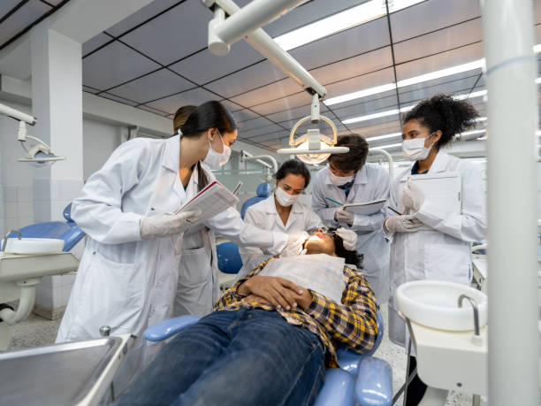

What to Expect During Dental School
First and second years: biological science studies; start of simulation-based clinical instruction.
The majority of the first two years of dentistry school are devoted to studying fundamental biological sciences, which include information on the anatomy, physiology, and disorders that can impact the human body.
Classes often include:
Anatomy
Physiology
Biochemistry
Microbiology
Pharmacology
Dental-oriented sciences: Oral anatomy, Oral pathology, and Oral histology
Third and Fourth Years: Mostly Clinical
Students frequently cycle among different clinics, hospitals, and other off-campus community settings while working under the guidance of a clinical teacher at many institutions. This allows students the chance to collaborate closely with other health professionals and students studying health professions, teaching them the value of a team approach to providing health care.
